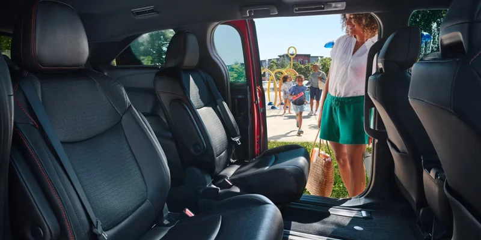

Shopping a Sienna Hybrid near San Diego? Dalton Toyota National City stocks Toyota's hybrid-only minivan at 2400 National City Blvd, on the Mile of Cars just off I-5. Every Sienna pairs a gas engine with electric motors, there is no gas-only version, so the fuel savings come standard. See live inventory at toyotadalton.com or call (619) 474-5573 to book a test drive.
DALTON TOYOTA NATIONAL CITY · SIENNA HYBRIDA Toyota Sienna Hybrid at Dalton Toyota National City, the hybrid-only minivan with available electric-motor all-wheel drive, sold and serviced on the National City Mile of Cars.
01From the sales floor
The Sienna Hybrid, at a glance.
When someone searches "Sienna hybrid," they are usually not comparing it to other hybrids, they are comparing it to every other minivan, and discovering the Sienna already decided the question for them.
Toyota dropped the gas-only Sienna years ago. The hybrid powertrain is the only powertrain, which means you do not pay a premium to get the efficient version; the efficient version is the version.
Here is what is actually under the skin. Toyota builds the Sienna around a 2.5-liter four-cylinder paired with electric motors, with a total system output rated by Toyota at 245 horsepower in front-wheel-drive form. That is enough to move a fully loaded van of kids and gear up the 805 without drama, and the electronic continuously variable transmission keeps the power delivery smooth in the stop-and-go that defines a National City commute. Available all-wheel drive uses a separate rear electric motor rather than a heavy driveshaft, a packaging trick that adds traction without gutting the fuel economy. Not many minivans offer AWD at all, and fewer still pair it with hybrid mileage.
Sienna Hybrid · key specs
Powertrain
2.5L four-cylinder + electric motors
System output
245 hp, FWD (Toyota)
Transmission
Electronic CVT (eCVT)
All-wheel drive
Available · electric rear motor
Fuel economy
~36 mpg combined, FWD (EPA)
Seating
7 or 8 across three rows
Because trims, colors, and packages shift as units arrive, we keep current Sienna Hybrid inventory posted online rather than quote a list that goes stale by the weekend. The fastest way to see exactly what is on the lot today is to check live inventory at toyotadalton.com. If you have a specific trim or color in mind, call ahead at (619) 474-5573 and we will tell you what is here or what is inbound.
Want to see a Sienna Hybrid in person? Browse current inventory at toyotadalton.com, then call (619) 474-5573 to hold one for a test drive before you make the trip in.
Note · Reviewed and posted by the Dalton Toyota National City sales team. Powertrain, fuel-economy, and trim specifics vary by model year and configuration; confirm the exact EPA rating for any build at fueleconomy.gov or with our sales desk at (619) 474-5573 before you buy.
02The numbers that matter
What the EPA and IIHS numbers actually tell you.
A family minivan invites two fair questions: what does it cost to feed, and is it safe? We will answer both with numbers you can verify, not adjectives.
On fuel
The EPA rates the front-wheel-drive Sienna at roughly 36 mpg combined, with the all-wheel-drive version landing a touch behind it (you can confirm the exact rating for any model year and configuration at fueleconomy.gov, the government's official mileage database run by the EPA and the Department of Energy). To put that in plain terms: that is roughly double what a traditional V6 minivan returns, and the gap is widest exactly where you spend your time, crawling on the I-5 between National City and downtown San Diego. A hybrid does its best work in stop-and-go, recapturing energy every time you brake and idling on electric power instead of burning fuel at a red light. The honest catch most shoppers miss: highway mileage and city mileage are close on this van, so if your driving is almost all open freeway at 75 mph, you will see less of the hybrid's advantage than a city commuter will. It still wins on the highway, it just wins by less.
~36 mpg
EPA combined, front-wheel drive
2× a V6
Roughly double a traditional V6 minivan
IIHS
Crash & front-crash-prevention tested
NHTSA
Recall database checked by VIN
On safety
The Sienna platform has performed well in Insurance Institute for Highway Safety testing (iihs.org), which evaluates crashworthiness and headlight and front-crash-prevention performance, and the National Highway Traffic Safety Administration (nhtsa.gov) publishes crash-test star ratings and any open recall campaigns by VIN. We pulled the VIN history and checked the NHTSA recall database on the Sienna Hybrid units we took in this spring before any of them went on the line, if a van had an open campaign, we cleared it with Toyota first. We would rather hand you a clean recall record than rush a vehicle onto the lot.
03A straight comparison
Sienna Hybrid vs. a traditional V6 minivan.
If you are cross-shopping the Sienna against an older-style gas minivan, here is the honest breakdown of where the difference lands.
Spec
The pickToyota Sienna HybridHybrid minivan · available AWD
Traditional V6 minivanOlder-style gas minivan
Powertrain
2.5L four-cylinder + electric motors, 245 hp (Toyota)
V6 gas engine
Fuel economy
~36 mpg combined, FWD (EPA)
High teens to low 20s mpg
All-wheel drive
Available, electric rear motor
Rare or unavailable
City driving
Recaptures energy, idles on electric
Burns fuel idling and braking
Brake wear
Often reduced by regenerative braking
Conventional
Best for
Buyers who want efficiency without sacrificing space
Buyers who want a familiar V6
The pick
Toyota Sienna Hybrid
Hybrid minivan · available AWD
Powertrain
2.5L four-cyl + electric, 245 hp
Fuel economy
~36 mpg combined, FWD (EPA)
All-wheel drive
Available, electric rear motor
City driving
Recaptures energy, idles on electric
Brake wear
Often reduced by regen braking
Cross-shop
Traditional V6 minivan
Older-style gas minivan
Powertrain
V6 gas engine
Fuel economy
High teens to low 20s mpg
All-wheel drive
Rare or unavailable
City driving
Burns fuel idling and braking
Brake wear
Conventional
The summary: the Sienna Hybrid does not ask you to choose between space and efficiency the way the old minivan math used to. For valuation context on your current vehicle, Kelley Blue Book (kbb.com) and Edmunds (edmunds.com) both publish trade-in and market-value ranges you can check before you come in, so the trade conversation starts from a number you have already seen.
04On the lot
A walk-around the way we'd give it on the lot.
When a Sienna Hybrid lands at National City, our team does the same thing we would do if we were buying it for our own family.
We walked the most recent arrival corner to corner: we inspected the dual power-sliding doors and the power liftgate to confirm they cycled cleanly under load, we ran the hybrid system through a short loop to verify the EV mode engaged at low speed and the regenerative braking handed off smoothly to the friction brakes, and we verified the second- and third-row seats folded and latched the way Toyota's mechanism is supposed to. On one trade-in Sienna, we found a worn cabin air filter and a slow-cycling sliding door during that inspection and replaced both before listing it, because a family van lives or dies on the doors working every single school-pickup line.

DALTON TOYOTA NATIONAL CITY · INSPECTIONA Toyota Sienna Hybrid inspected corner to corner, power sliding doors, power liftgate, hybrid system, and folding second- and third-row seats, before it goes on the line at Dalton Toyota National City.
A family van lives or dies on the doors working every single school-pickup line. We replace what we find before a Sienna goes on the line.
That hands-on pass is also why our service relationship matters more on this van than on a basic commuter. More on that below.
05What you actually get
What you actually get with a new Sienna Hybrid.
The Sienna is engineered around how families really use a minivan, not how a brochure imagines they do.
Space7–8 seats
Room for the whole crew
Three rows of seating with second-row captain's chairs or a bench depending on trim, seating seven or eight. Fold the rows flat and the cargo bay swallows strollers, hockey bags, and a Costco run without negotiation.
AccessPower doors
Doors and a floor built for kids
Dual power-sliding side doors and a power liftgate make loading one-handed-easy in a packed pickup line, and the low, flat floor means little ones climb in themselves.
TechConnected
Tech that keeps everyone settled
A large touchscreen, wireless smartphone connectivity, and USB ports throughout, and on higher trims an onboard refrigerator and built-in vacuum, the details that make a drive to Legoland or the desert go smoothly.
SafetyTSS standard
Toyota Safety Sense standard
Toyota's driver-assist suite comes standard, including pre-collision warning, lane-keep assist, and adaptive cruise control, the kind of help that takes the edge off a freeway commute.
Trim availability, options, and exact equipment vary by vehicle. Confirm the configuration on any in-stock Sienna Hybrid with our sales team before you buy.
06Why shop here
Why shop the Sienna Hybrid at Dalton Toyota National City.
Dalton Toyota National City has been part of the National City Mile of Cars since 1996, and the dealership was named Chamber of Commerce Mile of Cars Dealership of the Year.
The way we sell is meant to feel like guidance, not pressure, a family van is a long commitment, and we would rather you buy the right one than the most expensive one. That approach shows up in the reviews. The dealership holds a 4.6-star rating from 6,165 Google reviews, a public track record you can read through yourself before you ever set foot on the lot. Whether the Sienna is your first Toyota or your fourth, the goal is the same: get you into a van that fits the way you actually live, and have you drive home with confidence.
The honest part: who the Sienna Hybrid is NOT for
We would rather tell you this now than have you regret it later. The Sienna is a minivan, full stop. If you have your heart set on the higher ground clearance and rugged styling of a three-row SUV, or you genuinely need to tow a heavy trailer, the Sienna is not pretending to be a Highlander or a Sequoia, and we will walk you over to those instead, on the same lot. The Sienna earns its keep on errands, road trips, carpools, and the daily grind of moving people and stuff efficiently. If that is your life, almost nothing beats it. If it is not, we would rather sell you the right Toyota than the wrong Sienna.
07After the sale
What ownership looks like here.
Buying the van is one part of the picture; the years after are the other. A hybrid deserves a service department that knows the system, and ours is on-site at the same National City location.
Sales and the people who service your van are under one roof, the team that sells you the Sienna is the team you come back to.
Low-maintenance, not no-maintenance
Our service department is open Monday through Friday 7:00 AM to 6:00 PM and Saturday 8:00 AM to 5:00 PM, closed Sunday, with parts keeping the same hours. The hybrid system is famously low-maintenance, the regenerative braking means brake pads often last far longer than on a conventional van because the electric motor does much of the slowing, but it is not no-maintenance. The hybrid battery, the inverter coolant, and the engine still want scheduled attention, and a Toyota-trained technician who works on these every week is the person you want touching them. Our parts department stocks or orders genuine Toyota components rather than guessing with whatever a parts-store shelf had in stock.
The 12-volt auxiliary battery is the one boring component that strands an otherwise healthy hybrid. We check it on every service visit.
The part most owners forget exists
One practical note for a hybrid specifically: the 12-volt auxiliary battery (separate from the big hybrid pack) is the part most owners forget exists until the van will not wake up. We check it on every service visit precisely because it is the one boring component that strands an otherwise healthy hybrid. Catching a weak 12-volt before it dies in a parking lot is exactly the kind of thing a relationship with a real service department is for.
08From search to keys
How buying a Sienna Hybrid here works.
We are at 2400 National City Blvd, just off I-5, an easy drive for families across San Diego County, National City, San Diego, Chula Vista, Bonita, Imperial Beach, and the rest of the South Bay.
4.6 ★
Google rating across 6,165 reviews
1996
On the National City Mile of Cars since
245 hp
Sienna Hybrid total system output (Toyota)
~36 mpg
EPA combined, front-wheel drive
The path from search to keys
Check inventory online. See which Sienna Hybrid trims, colors, and prices are in stock at toyotadalton.com so you know what is on the ground before you visit.
Call ahead. Ring our sales team at (619) 474-5573 to confirm a specific van is available. Because the AWD builds and certain trims move quickly, the exact configuration you want may be inbound rather than on the lot.
Come drive it. We are at 2400 National City Blvd, just off I-5. Take it out, fold the seats, work the power doors, and feel how quiet it is in EV mode at low speed.
Talk numbers in person. Bring your trade and your questions. We will walk you through pricing, financing, and any current Toyota offers face-to-face, at your pace.
If you are trading in, bring your title or payoff details and your registration. California buyers should also know the DMV collects use tax, title, and registration fees on top of the sale price; the current fee schedule is published at the California DMV (dmv.ca.gov) so there are no surprises when you sign. We will walk through the out-the-door figure line by line before you commit to anything.
Where we are, and who we serve
Buyers come to us from National City, San Diego, Chula Vista, Bonita, Imperial Beach, and the rest of the South Bay, all within a short hop of our location on National City Blvd. From the South Bay you are a few minutes up the I-5; from the east, the 805 and the 54 bring you right in.
Sales hours
Mon–Wed, Fri8 AM – 8 PM
Thu8 AM – 6 PM
Sat8 AM – 8 PM
Sun10 AM – 6 PM
Service & Parts hours
Mon–Fri7 AM – 6 PM
Sat8 AM – 5 PM
SunClosed
One of the conveniences of buying here: we are open for Sunday sales from 10:00 AM to 6:00 PM, so you can come look at a Sienna on a day most families actually have free. Service and parts are closed Sundays, so if you need a question answered by a technician, plan a Saturday-morning visit before the 5:00 PM close.
Ask for General Sales Manager Clarence McClain when you call. Browse current Sienna Hybrid inventory, schedule a test drive, or reach us by phone at (619) 474-5573, and we will put the out-the-door number on paper before you sign.
Dalton Toyota National City
On the Mile of Cars since 1996.
Dalton Toyota National City has sold and serviced Toyotas on the National City Mile of Cars since 1996, was named Chamber of Commerce Mile of Cars Dealership of the Year, and holds a 4.6-star rating from 6,165 Google reviews. Sales, service, and parts are all under one roof.
The hybrid system is famously low-maintenance, regenerative braking often makes brake pads last far longer, but the hybrid battery, inverter coolant, and engine still want scheduled attention from a Toyota-trained technician who works on these every week.
We check the 12-volt auxiliary battery on every service visit, the one boring component that strands an otherwise healthy hybrid.
Our parts department stocks or orders genuine Toyota components, on-site at the same National City location.
Sienna Hybrid at our store
Hybrid-only minivan: 2.5L four-cylinder + electric motors, 245 hp (Toyota), electronic CVT, with available electric-motor all-wheel drive. EPA-rated around 36 mpg combined in front-wheel drive.
Three rows seating seven or eight, dual power-sliding doors, and a power liftgate. Toyota Safety Sense is standard.
Trims, colors, and packages vary as units arrive, confirm any in-stock build with our sales team before you buy.
Frequently asked questions about the Toyota Sienna Hybrid.
Is the Toyota Sienna only available as a hybrid?
Yes. The current Sienna is sold exclusively as a hybrid, there is no gas-only version. Every new Sienna at Dalton Toyota National City comes with the hybrid powertrain, so the fuel savings are standard rather than an upgrade.
Does the Sienna Hybrid come in all-wheel drive?
All-wheel drive is available on the Sienna Hybrid, using a separate rear electric motor rather than a heavy driveshaft. Ask our sales team at (619) 474-5573 which in-stock vans are equipped with AWD, since it varies by trim and availability.
What kind of fuel economy does the Sienna Hybrid get?
The EPA rates the front-wheel-drive Sienna at roughly 36 mpg combined, with all-wheel drive landing slightly behind it. You can confirm the exact figure for any model year and configuration at fueleconomy.gov.
How many people does the Sienna Hybrid seat?
The Sienna seats seven or eight passengers across three rows, depending on whether it is configured with second-row captain's chairs or a bench. We can show you both setups in person so you can see which fits your family.
Is the Sienna Hybrid expensive to maintain?
Hybrid maintenance is generally lower than people expect, regenerative braking often extends brake-pad life, for example, but the hybrid system, the engine, and the 12-volt battery still need scheduled service. Our Toyota-trained technicians work on these every week and check the 12-volt battery on every visit.
Can I see current Sienna Hybrid pricing and inventory online?
Yes, new Sienna Hybrid inventory and pricing are posted at toyotadalton.com. Because availability changes, call (619) 474-5573 or reach us through the site to confirm a specific vehicle is still in stock.
Where is Dalton Toyota National City located?
2400 National City Blvd, National City, CA 91950, on the Mile of Cars, convenient to National City, San Diego, Chula Vista, Bonita, and Imperial Beach.
Can I test drive a Sienna on a Sunday?
Yes. Our sales department is open Sunday from 10:00 AM to 6:00 PM. Call (619) 474-5573 ahead of time and we will have a Sienna Hybrid ready for you.
10References
Sources and references
Reviewed and posted by the Dalton Toyota National City sales team · June 16, 2026
Byline
Clarence McClain, General Sales Manager
Reviewed and posted by the Dalton Toyota National City sales team.
Dalton Toyota National City · 2400 National City Blvd, National City, CA 91950
Sienna Hybrid powertrain, fuel-economy, seating, and equipment described from Toyota's published Sienna documentation. EPA fuel-economy figures should be confirmed for the specific model year and configuration at fueleconomy.gov. IIHS crashworthiness results and NHTSA crash-test ratings and recall campaigns can be verified at iihs.org and nhtsa.gov. Trim availability, options, and exact equipment vary by vehicle. For a current Sienna Hybrid out-the-door quote, call Sales at (619) 474-5573.
If a question about the Toyota Sienna Hybrid at Dalton Toyota National City is not answered here, call (619) 474-5573 and ask for a sales advisor, or browse current Sienna Hybrid inventory at toyotadalton.com.
Browse live Sienna Hybrid inventory at toyotadalton.com, then call our sales team to set up a test drive at Dalton Toyota National City. We are at 2400 National City Blvd, and we are here to help you drive home with confidence.